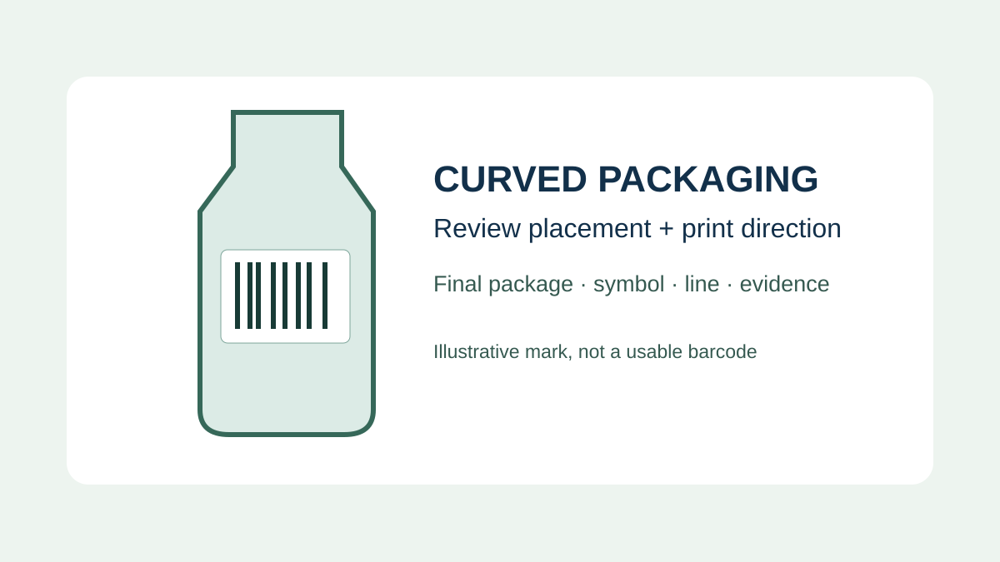
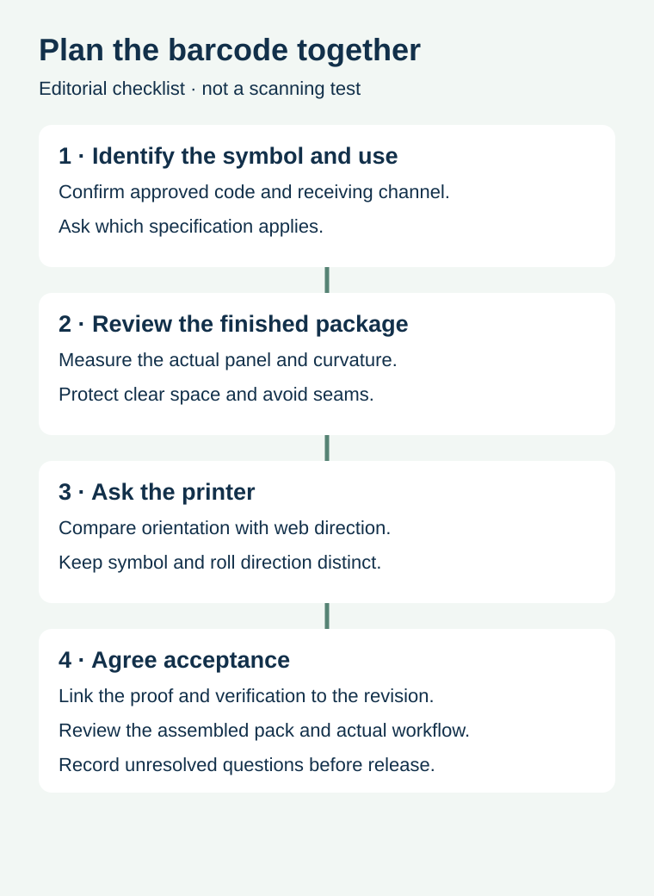

A barcode that fits a flat label proof may wrap too far around a narrow bottle once the label is applied. Rotating it can change how it sits on the package, but that same rotation may also change the way the bars travel through a printing process. The artwork owner, label printer and receiving partner need to settle these decisions together before approving the file.
Start with the approved linear symbol and its intended scan environment, then review the actual bottle panel, the printer's output direction and the agreed acceptance evidence. A successful phone scan on a flat proof is useful information, but it does not establish that the final pack satisfies a retailer's quality requirements.

Why the finished curve matters
On a curved surface, the ends of a symbol can turn away from the reader. The risk depends on the real shape and size of the package and the complete symbol, not just the visible width of the dark bars. A slim sauce bottle and a wide jar may need different layouts even if they use the same product identifier. Label seams, container shoulders, folds and promotional overlays can further restrict the usable area.
GS1's General Specifications discuss the placement of linear barcodes on curved surfaces and the relationship between symbol dimensions and the package. The correct provision depends on the symbol and application. Ask the code specialist to interpret the applicable current edition for your particular package instead of applying a generic minimum diameter.
Ladder and picket fence describe placement, not a guarantee
On an upright cylindrical bottle, the commonly illustrated ladder arrangement places the bars across the bottle's vertical axis, so the individual bars run around the container. In the picket-fence arrangement, the bars run along that axis. Think about the symbol in relation to the actual cylindrical surface rather than relying on the page orientation of a PDF. The same words can be confusing when a package is displayed or printed in a different direction.
GS1's curved-surface guidance illustrates ladder orientation as the preferred approach for curved surfaces, with a caution about picket-fence placement on tight curves. This is a starting point for review, not permission to rotate, shrink or redesign a symbol without checking the applicable rules, approved data and printing process. Keep the required quiet zones and human-readable information in the specification.
Resolve the printing direction before approving the layout


The label's travel through a press or overprinter is not automatically the same as the bottle's upright direction. The artwork's rotation, labels across the web, unwind format and where variable information is added can all affect the production arrangement. GS1 notes that some print processes produce better results when bars run in the print direction and recommends consulting the printer. Do not assume every printer or process shares the same preference.
For example, a hypothetical beverage brand chooses a label layout based on a curved bottle, while its co-packer plans to add variable data during filling. Before approval, the parties should exchange the actual label layout, roll direction, print method and code position. If the preferred orientations conflict, compare proposed layouts with the code specialist and equipment owner; any change still needs the applicable specification and production evidence.
| Question | Record before release | Responsible party |
|---|---|---|
| What must be read? | Approved linear symbol, identifier and receiving use | Brand or data owner and receiving partner |
| Where does it sit? | Actual panel dimensions, curvature, seam and clear space | Packaging and artwork owners |
| How is it printed? | Printer process, artwork orientation and web direction | Label converter or overprint owner |
| How will it be checked? | Applicable criteria, sample identity and verification scope | Quality owner and qualified verifier |
Keep dimensions and clear space attached to the symbol
Use the approved barcode artwork at its intended physical size. Ask its owner for the symbol type, applicable dimensions and clear-zone requirements; do not redraw bars from a screen image or invent a universal size. A clear zone can be compromised by a label edge, dark background, overprint, seam or later applied sticker. Check the fully assembled pack, not only the design file.
Rotating a symbol can also change the space needed for other label elements. If the available panel is insufficient, work through alternatives with the responsible parties: reposition a graphic, revise the panel, or review another supported package arrangement. Do not reduce the code below its applicable specification simply to make a crowded proof fit.
Separate file approval, verification and line checks
File approval confirms which identifier and layout are intended. A verification report evaluates the printed symbol under a defined method and acceptance requirement. A final-pack or line check considers the way the package is presented and handled in a real workflow. Each record answers a different question and should reference the same artwork revision and sample. Ask the verifier what can be measured on the actual curved pack and what complementary checks are appropriate.
For the distinction between a scan and a verification report, see barcode verification versus scanning. For QR layout and quiet zones, use the separate QR packaging guide; its QR-specific dimensions should not be copied to a linear barcode. For bottle fit independent of the code, see small-diameter label fit.
Send the package and printing details together
Share the approved symbol file, intended receiving channel, bottle drawing or actual panel dimensions, proposed label size and print method. Add the roll layout or overprint process if known, plus any acceptance requirements from the retailer or quality team. Prepare a label specification inquiry; the contact page opens an email draft and lists email or WhatsApp for attachments. Actual supply, testing and timing require confirmation.